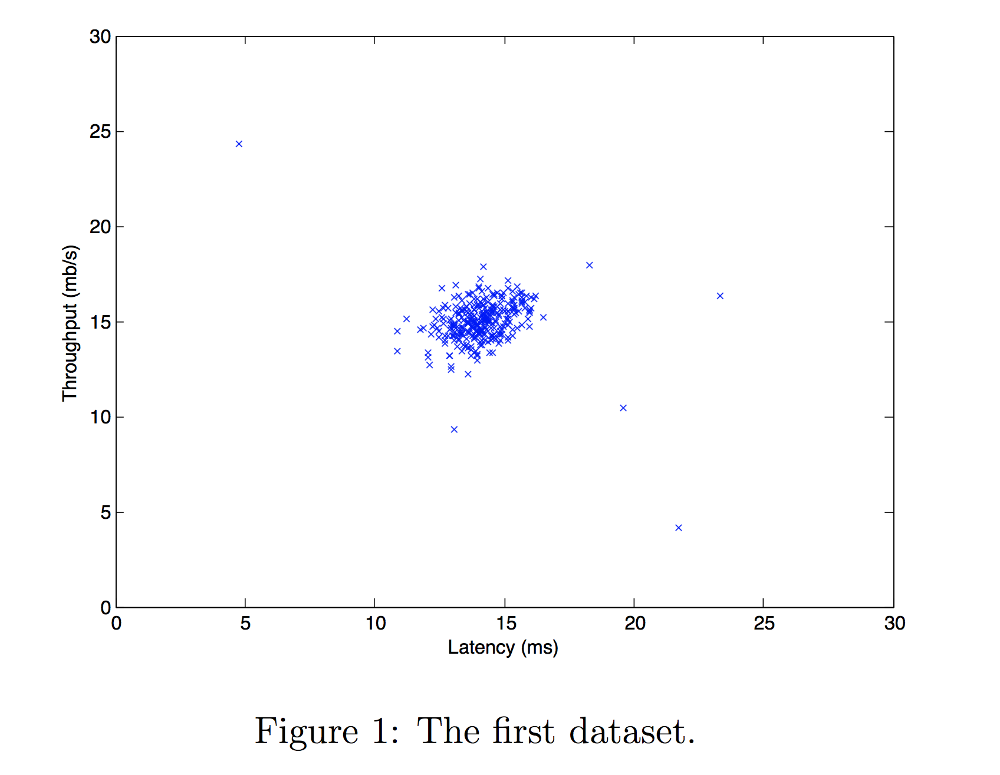

Phát hiện bất thường
Học xem “bình thường” trông như thế nào, rồi gắn cờ mọi thứ khác lạ. Không cần thấy trước mọi kiểu gian lận hay hỏng hóc.
Bài toán
Practice Lab giám sát các máy chủ trong trung tâm dữ liệu. Mỗi máy được đo hai đặc trưng: độ trễ (latency, ms) và thông lượng (throughput, mb/s). Đa số máy hoạt động bình thường; ta muốn tự động phát hiện máy có hành vi bất thường.

Ý tưởng: xây mô hình xác suất \(p(\mathbf{x})\) từ dữ liệu bình thường. Với ví dụ mới \(\mathbf{x}_{\text{test}}\):
Phân phối Gauss
\(\mu\) là tâm của “quả chuông”, \(\sigma\) là độ rộng. Ước lượng từ dữ liệu (trong lab dùng \(\frac{1}{m}\) — ước lượng hợp lý cực đại):
def estimate_gaussian(X):
m, n = X.shape
mu = np.mean(X, axis=0) # trung bình mỗi đặc trưng
var = np.var(X, axis=0) # phương sai mỗi đặc trưng
return mu, varMô hình nhiều đặc trưng
Giả định các đặc trưng độc lập, xác suất đồng thời là tích các xác suất riêng:
Một đặc trưng bất thường (xác suất rất nhỏ) đủ kéo cả tích xuống thấp.
Chọn ngưỡng ε
Thuật toán học không giám sát, nhưng để đánh giá và chọn ε, ta dùng một ít ví dụ có nhãn (đã biết là bất thường hay không) trong tập cross-validation. Vì bất thường rất hiếm, dữ liệu cực kỳ lệch — dùng F1 (chương 11) thay cho accuracy:
def select_threshold(y_val, p_val):
best_epsilon, best_F1, F1 = 0, 0, 0
step_size = (max(p_val) - min(p_val)) / 1000
for epsilon in np.arange(min(p_val), max(p_val), step_size):
predictions = (p_val < epsilon)
tp = np.sum((predictions == 1) & (y_val == 1))
fp = np.sum((predictions == 1) & (y_val == 0))
fn = np.sum((predictions == 0) & (y_val == 1))
precision = tp / (tp + fp) if (tp + fp) > 0 else 0
recall = tp / (tp + fn) if (tp + fn) > 0 else 0
F1 = 2 * precision * recall / (precision + recall) if precision + recall > 0 else 0
if F1 > best_F1:
best_F1, best_epsilon = F1, epsilon
return best_epsilon, best_F1- Dữ liệu 2 chiều: ε tốt nhất ≈ 8.99e-05, F1 ≈ 0.875.
- Dữ liệu 11 chiều (thực tế hơn): ε ≈ 1.38e-18, F1 ≈ 0.615, phát hiện 117 điểm bất thường.
Phát hiện bất thường hay học có giám sát?
| Phát hiện bất thường | Học có giám sát |
|---|---|
| Rất ít ví dụ dương (0–20), rất nhiều ví dụ âm | Nhiều ví dụ cả dương lẫn âm |
| Nhiều “kiểu” bất thường khác nhau; bất thường tương lai có thể chưa từng xuất hiện | Ví dụ dương tương lai giống với những gì đã thấy |
| Gian lận, hỏng hóc mới, xâm nhập mạng | Lọc spam, phân loại bệnh đã biết, dự báo thời tiết |
Chọn đặc trưng
- Làm đặc trưng “Gauss hơn”: nếu histogram lệch, thử \(\log(x + c)\), \(\sqrt{x}\), \(x^{1/3}\). Áp dụng cùng phép biến đổi cho mọi tập.
- Phân tích lỗi: nếu một bất thường có \(p(\mathbf{x})\) cao (không bị phát hiện), xem nó khác ở đâu và tạo đặc trưng mới bắt được điều đó.
- Kết hợp đặc trưng: ví dụ máy chủ có CPU cao nhưng traffic mạng thấp là đáng ngờ → tạo \(x_5 = \frac{\text{CPU load}}{\text{network traffic}}\).
- Gauss nhiều chiều \(p(\mathbf{x}) = \frac{1}{(2\pi)^{n/2}|\Sigma|^{1/2}}\exp\left(-\frac12(\mathbf{x}-\boldsymbol\mu)^\top\Sigma^{-1}(\mathbf{x}-\boldsymbol\mu)\right)\) tự nắm bắt tương quan giữa các đặc trưng (không cần tự tạo đặc trưng tỉ lệ), nhưng cần \(m > n\) và tốn tính toán hơn. Hàm
multivariate_gaussiantrong lab thật ra dùng ma trận hiệp phương sai đường chéo — tương đương mô hình tích. - Isolation Forest: bất thường dễ bị “cô lập” bằng ít lần chia ngẫu nhiên —
sklearn.ensemble.IsolationForest. - One-Class SVM, Local Outlier Factor.
- Autoencoder: mạng nơ-ron học nén rồi khôi phục dữ liệu bình thường; ví dụ có lỗi khôi phục lớn là bất thường. Hiệu quả với ảnh, chuỗi thời gian.
- C3 Practice Lab — Anomaly Detection (graded:
estimate_gaussian,select_threshold)
Từ ghi chú Notion
Ví dụ đặc trưng trong thực tế:
- Giao dịch tài chính: tần suất giao dịch giờ cao điểm thường gần chuẩn; số tiền giao dịch lệch phải nên dùng log; khoảng cách giữa các giao dịch có đuôi dài nên dùng Box-Cox.
- Lưu lượng mạng: tốc độ truyền trung bình gần chuẩn; số kết nối mỗi giây có nhiều đỉnh (multimodal), cần phương pháp phi tuyến hoặc mô hình khác.
import numpy as np
from scipy.stats import boxcox, rankdata, norm
from sklearn.preprocessing import PowerTransformer
data_log = np.log(data + 1) # log-transform
data_sqrt = np.sqrt(data) # căn bậc hai
data_boxcox, lambda_optimal = boxcox(data) # Box-Cox (data > 0)
data_yj = PowerTransformer(method='yeo-johnson').fit_transform(data.reshape(-1, 1))
ranks = rankdata(data) # rank → phân phối chuẩn
data_rank_norm = norm.ppf((ranks - 0.5) / len(data))Nguồn Notion: Anomaly detection
Ghi nhớ
- Ước lượng \(\mu_j, \sigma_j^2\) cho mỗi đặc trưng; \(p(\mathbf{x}) = \prod_j p(x_j)\).
- Gắn cờ bất thường khi \(p(\mathbf{x}) < \varepsilon\); chọn ε bằng F1 trên tập CV có nhãn.
- Dùng khi ví dụ dương rất hiếm và đa dạng; nếu nhiều ví dụ dương, dùng học có giám sát.
Tự kiểm tra
Training set nên chứa dữ liệu gì?
Chủ yếu (hoặc toàn bộ) ví dụ bình thường. Vài bất thường lọt vào cũng không sao. Các bất thường đã biết nên dành cho tập CV và test.
Mô hình bỏ sót nhiều bất thường thật. Nên tăng hay giảm ε?
Tăng ε để gắn cờ nhiều hơn (recall tăng, precision có thể giảm). Hoặc tốt hơn: tìm đặc trưng mới phân biệt được các bất thường bị sót.